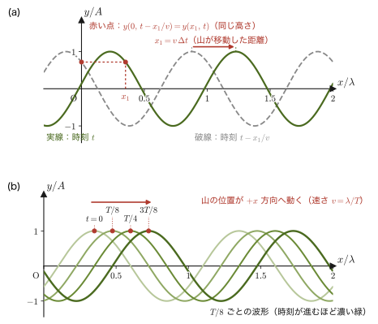
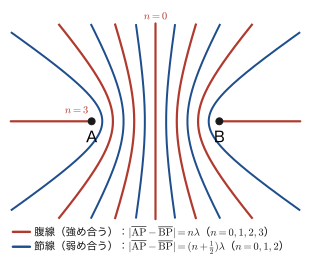
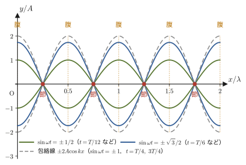

第11章波の基本性質 — 波の式・干渉・定常波・回折
水面に石を投げ込むと，波紋が輪になって広がっていく．ギターの弦をはじくと，弦の振動が空気を伝わって音として耳に届く．地震が起きると，震源から伝わってきた揺れがビルを揺らす．太陽の光も，スマートフォンの電波も，やはり「波」の一種である．これらはいずれ扱う物質も現象もまったく違うのに，「振動が次々に伝わっていく」という同じ数学的な構造をもっている——これが，力学に続いて波動を独立の部として学ぶ理由である．高校物理では，正弦波の式 $y=A\sin(\omega t-kx+\phi)$ や，干渉が強め合う条件 $\Delta=n\lambda$ を公式として覚えたはずである．この章では，それらの公式が「媒質の各点が単振動している」という描像から，一行も飛ばさずに導かれることを確認する．
第I部（力学）で学んだ単振動（第7章）は，1点だけが行ったり来たりする運動だった．波動とは，その単振動が「隣の点，そのまた隣の点……」と時間差をつけて次々に伝わっていく現象にほかならない——本章はまずこの視点から出発し（11.1節），ついで「形を保ったまま伝わる」という波の性質を1次元波動方程式という微分方程式の言葉で表し（11.2節），そこから高校でおなじみの波動関数 $y=A\sin(\omega t-kx+\phi)$ を導く（11.3節）．続いて，位相速度と波の進む向き（11.4節），波が運ぶエネルギー（11.5節），複数の波が重なる干渉（11.6節）と定常波（11.7節），波面の伝わり方を説明するホイヘンスの原理と反射・屈折の法則（11.8節），そして回折（11.9節）へと話を進める．
第II部（波動）全体の見取り図：この第11章で学ぶ「波の一般論」（波動関数・干渉・定常波・反射屈折・回折）は，媒質の種類によらずどんな波にも通用する共通の骨組みである．第II部は，この骨組みを一つずつ具体的な現象に当てはめていく構成になっている．
- 第11章（本章）：波の一般論——波動関数，位相速度，エネルギー，干渉，定常波，ホイヘンスの原理，回折．
- 第12章 音波：空気の疎密波に当てはめて，ドップラー効果・うなり・気柱や弦の共鳴を学ぶ．
- 第13章 光波の基礎：光速の測定と屈折率．
- 第14章 光の反射と屈折：反射での位相の変化，フェルマーの原理，全反射．
- 第15章 レンズと結像：屈折を利用した像のでき方．
- 第16章 光の干渉と回折格子：ヤングの実験・薄膜・ニュートンリング（本章の干渉条件の光への応用）．
- 第17章 波の重ね合わせとフーリエ解析：うなりや定常波を一般化し，波束と群速度へ進む．
複数の正弦波の重ね合わせ（うなりや定常波）は，姉妹編「大学数学（AD 02）」第VI部で学ぶフーリエ級数・フーリエ変換（任意の波形を正弦波の重ね合わせで表す理論）の物理的な原型でもある（第17章）．1次元波動方程式そのものの一般論は AD 02 第43章で扱われる．これらの数学的な道具は，波動を学び終えたあとに振り返ると，本章で見た現象がより広い枠組みの一部だったことが見えてくるはずである．
- 単振動の運動方程式・一般解・エネルギー保存の復習（第7章）と，基準円による単振動の図的なイメージ
- 1次元波動方程式 $\pdiff{^2y}{t^2}=v^2\pdiff{^2y}{x^2}$ の意味と，$y=f(x-vt)$ の形の関数がこれを満たすことの確認（弦の張力・線密度からのイメージは11.2節，弦を伝わる波の速さ $v=\sqrt{S/\rho}$ の導出は第12章で行う）
- 媒質の1点の単振動 $y=A\sin(\omega t+\phi)$ から，伝わる遅れ $t\to t-x/v$ を通じて波動関数 $y=A\sin(\omega t-kx+\phi)$ を導く手順
- 位相速度 $v=\omega/k=f\lambda$ と，媒質の各点自身の振動速度（$\partial y/\partial t$）との違い，波の進む向きの判定法
- 波が運ぶエネルギーと強さ $I=2\pi^2\rho_{\mathrm m} A^2f^2v$（振幅・振動数の2乗に比例すること）
- 2つの波源からの干渉条件（同位相・逆位相），定常波 $y=2A\sin\omega t\cos kx$ の導出
- ホイヘンスの原理から反射の法則・屈折の法則を導く考え方，および回折が目立つ条件
もとにしたノート：望月泰英『物理学ノート 波動』 pp. 1–8．
この部（第II部 波動）で使う正弦波の書き方と記号
これから波動を扱う章では，正弦波を一貫して
$$ y=A\sin(\omega t-kx+\phi) $$の形で表す．これは高校の教科書で使われている形と同じであり，$+x$ 方向へ進む波を表す（この式の意味と，$-kx$ という符号がなぜ「進む」ことを表すのかは，11.3節・11.4節で丁寧に導く）．式に現れる記号を，あらかじめ表11.1にまとめておく．
| 記号 | 意味 | 単位 |
|---|---|---|
| $y(x,t)$ | 媒質の変位（位置 $x$，時刻 $t$ の関数） | $\mathrm{m}$ |
| $A$ | 振幅（変位の最大値） | $\mathrm{m}$ |
| $\omega=2\pi/T=2\pi f$ | 角振動数（$T$：周期，$f$：振動数） | $\mathrm{rad/s}$ |
| $k=2\pi/\lambda$ | 波数（wavenumber．単位長さあたりに位相が進む量，$\lambda$：波長） | $\mathrm{rad/m}$ |
| $\phi$ | 初期位相（$x=0,\ t=0$ での位相） | $\mathrm{rad}$ |
| $v=\omega/k=f\lambda$ | 位相速度（波の速さ） | $\mathrm{m/s}$ |
$k=2\pi/\lambda$ の意味と $v=\omega/k$ の導出は11.3節で行う．なお，ばね定数は第7章では $k$ と書いたが，波数 $k$ と紛らわしいので，本章ではばね定数を $\kappa$（カッパ）と書く．複素数を使った表示 $e^{i(kx-\omega t)}$ を使う場合は，実部・虚部のどちらが物理的な変位を表すか，位相の符号がここでの規約とどう対応するかを，その都度断ってから使う．
11.1 単振動の復習 — 波を理解するための出発点
波動を「媒質の1点1点が単振動しながら，その振動が隣へ隣へと伝わっていく現象」として理解するために，まず第7章で学んだ単振動（simple harmonic motion，SHM）の要点を振り返っておく．ばね定数 $\kappa\ [\mathrm{N/m}]$（第7章では $k$ と書いたが，本章では波数 $k$ と区別するために $\kappa$ と書く）のばねにつながれた質量 $m\ [\mathrm{kg}]$ のおもりの運動方程式は，
\begin{equation} m\ddot x=-\kappa x \qquad\text{すなわち}\qquad m\ddot x+\kappa x=0 \label{eq:11-shm-eom} \end{equation}であった（第7章 7.1節）．特性方程式を使ってこれを解くと，一般解は角振動数 $\omega=\sqrt{\kappa/m}\ [\mathrm{rad/s}]$ を用いて $x(t)=C_1\cos\omega t+C_2\sin\omega t$ の形になる．第7章では初期条件 $x(0)=A,\ \dot x(0)=0$ の場合に $x(t)=A\cos\omega t$（余弦の形）を得たが，一般の初期位相 $\phi$ を許すと，加法定理により同じ一般解を
\begin{equation} x(t)=A\sin(\omega t+\phi) \label{eq:11-shm-general} \end{equation}という正弦の形で書くこともできる（$A=\sqrt{C_1^2+C_2^2}$ は振幅，$\phi$ は初期位相．どちらの形で書いても表せる運動の集合は同じで，位相の原点を $\pi/2$ だけずらしただけの違いである）．$\sin$ の中身 $\omega t+\phi$ を位相（phase，単位 $\mathrm{rad}$）という．加法定理 $A\sin(\omega t+\phi)=A\sin\phi\cos\omega t+A\cos\phi\sin\omega t$ と $x(t)=C_1\cos\omega t+C_2\sin\omega t$ を見比べると，$C_1=A\sin\phi,\ C_2=A\cos\phi$ という対応があり，逆に $A=\sqrt{C_1^2+C_2^2},\ \tan\phi=C_1/C_2$ である．本章以降，波動関数を $\sin$ の形で統一する（冒頭の規約ボックス）ため，単振動もここでは式 \eqref{eq:11-shm-general} の $\sin$ の形で書いておく．角振動数・周期・振動数の関係は第7章の定義7.1のとおり $\omega=2\pi/T=2\pi f$ である．
導出：単振動のエネルギー保存則（エネルギー積分）
式 \eqref{eq:11-shm-eom} の両辺に $\dot x=v$ を掛けると，
$$ m\dot v\cdot v=-\kappa x\cdot v \qquad\text{すなわち}\qquad mv\frac{\dd v}{\dd t}=-\kappa x\frac{\dd x}{\dd t} $$となる．左辺は $\dfrac{\dd}{\dd t}\!\left(\dfrac12mv^2\right)=mv\dfrac{\dd v}{\dd t}$，右辺は $\dfrac{\dd}{\dd t}\!\left(\dfrac12\kappa x^2\right)=\kappa x\dfrac{\dd x}{\dd t}$ にそれぞれ等しい（合成関数の微分．大学数学 第6章 6.4節）から，
$$ \frac{\dd}{\dd t}\left(\frac12mv^2\right)=-\frac{\dd}{\dd t}\left(\frac12\kappa x^2\right) \qquad\therefore\qquad \frac{\dd}{\dd t}\left(\frac12mv^2+\frac12\kappa x^2\right)=0 $$である．時間で微分して0になるということは，かっこの中身は時刻によらず一定であるということだから，積分定数 $E$ を用いて
\begin{equation} \frac12mv^2+\frac12\kappa x^2=E \label{eq:11-shm-energy} \end{equation}が成り立つ（両辺を実際に $t$ で積分する書き方をすれば，$\displaystyle\int mv\frac{\dd v}{\dd t}\dd t=-\int \kappa x\frac{\dd x}{\dd t}\dd t$ から同じ結果が出る）．これが単振動のエネルギー保存則である．振幅 $A$ の位置では一瞬 $v=0$ になる（折り返し点）ので，$x=A,\ v=0$ を代入すると $E=\tfrac12\kappa A^2$ と求まる．
（導出終わり）
法則11.1 単振動のエネルギー保存則
質量 $m$，ばね定数 $\kappa$ の単振動子について，
$$ \frac12mv^2+\frac12\kappa x^2=\frac12\kappa A^2=(\text{一定}) $$が任意の時刻で成り立つ（$A$ は振幅）．右辺第1項は運動エネルギー，第2項は弾性力による位置エネルギーであり，両者の和（力学的エネルギー）が保存される．$x=0$（自然長の位置）を通過する瞬間に速さが最大になり，$\tfrac12mv_{\max}^2=\tfrac12\kappa A^2$ より $v_{\max}=A\omega$（$\omega=\sqrt{\kappa/m}$）である．
このエネルギー積分（運動方程式の両辺に速度を掛けて時間積分する，という技法）は，11.5節で波が運ぶエネルギーを求めるときに，媒質の1点の振動に対してもう一度そのまま使う．そこで同じ計算を思い出せるように，ここで手順を確認しておいた．
11.1.1 基準円 — 円運動の正射影としての単振動
単振動を図でイメージする方法として，基準円（reference circle）がある．半径 $A$ の円周上を，角速度 $\omega$ で反時計回りに等速円運動する点 $P$ を考える．時刻 $t=0$ に $P$ が基準の方向から角 $\phi$ だけ進んだ位置にあるとすると，時刻 $t$ での回転角は $\omega t+\phi$ である（基準円では，位相 $\omega t+\phi$ は点 $P$ が基準の向きから測った回転角に等しい）．この点 $P$ を，円の中心を通るある1本の直径（軸）に向かって垂直に投影した影の位置を $y$ とすると，
$$ y=A\sin(\omega t+\phi) $$となり，これはまさに式 \eqref{eq:11-shm-general} の単振動そのものである（図11.1）．つまり，単振動とは「一定の角速度で回る円運動を，ある方向から眺めたときの影の動き」だと考えることができる．この見方は，後で波動関数の位相 $\omega t-kx+\phi$ を回転角として直感的にイメージする助けになる．
例題11.1 角振動数と周期
ばね定数 $\kappa=200\ \mathrm{N/m}$ のばねに質量 $m=0.5\ \mathrm{kg}$ のおもりをつないだ．角振動数 $\omega$ と周期 $T$ を求めよ．また，振幅 $A=0.05\ \mathrm{m}$ で振動しているときの最大速度 $v_{\max}$ を求めよ．
解答 角振動数は
$$ \omega=\sqrt{\frac{\kappa}{m}}=\sqrt{\frac{200\ \mathrm{N/m}}{0.5\ \mathrm{kg}}}=\sqrt{400\ \mathrm{s^{-2}}}=20\ \mathrm{rad/s} $$周期は $T=2\pi/\omega=2\pi/20=\pi/10\ \mathrm{s}\approx0.314\ \mathrm{s}$．法則11.1より，最大速度は
$$ v_{\max}=A\omega=0.05\ \mathrm{m}\times20\ \mathrm{s^{-1}}=1.0\ \mathrm{m/s} $$である．
例題11.2 基準円と初期位相
周期 $T=3.0\ \mathrm{s}$ で単振動する質点の変位が $y=A\sin(\omega t+\phi)$ で表され，$t=0$ に基準円上の点 $P$ が基準の向き（$x$ 軸）から角 $\phi=\pi/6$（$30^\circ$）の位置にあるとする．(1) $t=0$ の変位は $A$ の何倍か．(2) 変位が最初に最大値 $A$ になる時刻を求めよ．
解答 角振動数は $\omega=2\pi/T=2\pi/3.0=2\pi/3\ \mathrm{rad/s}$ である．
(1) $y(0)=A\sin\phi=A\sin(\pi/6)=A/2$ なので，$A$ の0.5倍である（基準円では，点 $P$ の高さ $A\sin30^\circ$ にあたる）．
(2) $y=A$ となるのは $\sin(\omega t+\phi)=1$，すなわち $\omega t+\phi=\pi/2+2n\pi$（$n$ は整数）のときである．$t\geqq0$ で最初の時刻は $n=0$ のときで，
$$ \omega t=\frac{\pi}{2}-\phi=\frac{\pi}{2}-\frac{\pi}{6}=\frac{\pi}{3} \qquad\therefore\qquad t=\frac{\pi/3}{2\pi/3}=\frac12=0.50\ \mathrm{s} $$である．基準円で確かめると，点 $P$ が $30^\circ$ の位置から真上（$90^\circ$）まで $60^\circ=\pi/3$ だけ回ればよく，これは1周（$360^\circ$）の $1/6$，つまり $T/6=0.50\ \mathrm{s}$ にあたる．
以上が，波動を学ぶうえで前提となる単振動の要点である．次節からは，この「1点の単振動」が空間的に少しずつ位相をずらしながら並んだものが波である，という視点で話を進める．
11.2 波動方程式 — 波形が崩れずに伝わることの数学
波を特徴づける最大の性質は「波形（山や谷の形）を崩さずに，一定の速さで伝わっていく」ことである．池に広がる波紋も，弦を伝わるパルスも，音のかたまりも，伝わる速さ $v$ こそ媒質によって違うが，「形を保ったまま進む」という点は共通している．この性質を数式で正確に表したものが，次の1次元波動方程式（one-dimensional wave equation）である．
公式11.1 1次元波動方程式
変位 $y(x,t)$（位置 $x$，時刻 $t$ の2変数関数）が
\begin{equation} \pdiff{^2y}{t^2}=v^2\pdiff{^2y}{x^2} \label{eq:11-wave-eq} \end{equation}を満たすとき，$y(x,t)$ は速さ $v\ [\mathrm{m/s}]$ で伝わる1次元の波を表す．左辺は媒質の1点が時間方向にどう加速するか，右辺は変位が空間方向にどれだけ曲がっているか（$x$ 方向の「曲率」に相当する量）を表す——この方程式は「その点の加速度は，まわりに対する変位の曲がり具合に比例する」という関係を述べている．
イメージ：加速度が「曲がり具合」に比例する理由
ぴんと張った弦（線密度 $\rho\ [\mathrm{kg/m}]$，張力 $S\ [\mathrm N]$）の，長さ $\Delta x$ のごく小さな一部分を考える．この部分の両端は，弦の接線の向きに張力 $S$ で引かれている．上に凸に曲がっているところ（山）では，両端の張力を合わせると下向きの力が残り，下に凸に曲がっているところ（谷）では上向きの力が残る．力の大きさは，傾き $\partial y/\partial x$ の両端での差に比例し，微小な傾きのときは $S\,\dfrac{\partial^2y}{\partial x^2}\Delta x$ となる．質量 $\rho\Delta x$ にこの力ではたらくニュートンの運動方程式 $\rho\Delta x\,\dfrac{\partial^2y}{\partial t^2}=S\,\dfrac{\partial^2y}{\partial x^2}\Delta x$ から，$\partial^2y/\partial t^2=(S/\rho)\,\partial^2y/\partial x^2$ となり，$v^2=S/\rho$ とおけば式 \eqref{eq:11-wave-eq} になる．「曲がりが大きいほど（$\partial^2y/\partial x^2$ が大きいほど）強く引き戻される」という，まさにニュートンの第2法則がこの方程式の正体である（丁寧な導出は大学数学 第43章 43.2節．第12章 12.6節では，弦を伝わる波の速さ $v=\sqrt{S/\rho}$ を別の方法で導く）．
式 \eqref{eq:11-wave-eq} に現れる $\partial^2y/\partial t^2,\ \partial^2y/\partial x^2$ は偏微分（partial derivative，$y$ が $x,t$ という2つの変数の関数であるとき，一方を固定してもう一方だけで微分する操作．大学数学 第6章 6.2節）の2階版である．$\partial y/\partial t$ は「位置 $x$ を固定して時刻 $t$ だけを動かしたときの $y$ の変化率」，すなわち媒質のその点が実際に振動する速度（後で「媒質の振動速度」と呼んで位相速度と区別する，11.4節）を表し，$\partial y/\partial x$ は「時刻 $t$ を固定して位置 $x$ だけを動かしたときの $y$ の変化率」，すなわちある瞬間の波形の傾きを表す．波動方程式が物理の問題に本格的に偏微分を使う最初の場面である．
なぜこの方程式で「形を保って進む」ことが表せるのか
結論を先に言うと，式 \eqref{eq:11-wave-eq} を満たす関数は，必ず
$$ y(x,t)=f(x-vt)+g(x+vt) $$という形に書ける（定理11.1．$f,g$ は2回微分可能でありさえすれば，どんな形の関数でもよい．すべての解がこの形であることの証明は，このあとの「導出」で行う）．ここで $f(x-vt)$ は，時刻 $t=0$ の波形 $f(x)$ を，そっくりそのまま $+x$ 方向へ距離 $vt$ だけ平行移動したものである——実際，時刻を $t=0$ から $t=t_0$ に進めると，$f(x-vt_0)$ のグラフは $f(x)$ のグラフを右へ $vt_0$ だけずらしただけの形をしている（図11.2上）．同様に $g(x+vt)$ は $-x$ 方向へ進む波形である（図11.2下）．つまり波動方程式は，「$x$ 方向にそのまま平行移動する形の関数」と「$-x$ 方向にそのまま平行移動する形の関数」の和だけを解として許す方程式なのであり，これが「波形を保ったまま伝わる」という性質の数学的な正体である．以下でこのことを実際に確かめる．
導出：$y=f(x-vt)$ が波動方程式を満たすことの確認
$f$ を（2回微分可能な）任意の1変数関数とし，$u\equiv x-vt$ とおいて $y(x,t)=f(u)=f(x-vt)$ を考える．$u$ は $x,t$ の関数（$\partial u/\partial x=1,\ \partial u/\partial t=-v$）なので，$y$ を $t$ で偏微分するには合成関数の微分公式（大学数学 第6章 6.4節）を使う：
$$ \pdiff{y}{t}=\frac{\dd f}{\dd u}\cdot\pdiff{u}{t}=f'(u)\cdot(-v)=-vf'(u) $$（$f'(u)=\dd f/\dd u$ は $f$ を中身 $u$ で1回微分したもの．$x$ は $t$ を含まないので $\partial u/\partial t=\partial(x-vt)/\partial t=-v$ である）．もう一度 $t$ で偏微分すると，$f'(u)$ も $u$ を通じて $t$ に依存する合成関数なので同じ公式を使って，
$$ \pdiff{^2y}{t^2}=\pdiff{}{t}\bigl[-vf'(u)\bigr]=-v\cdot f''(u)\cdot\pdiff{u}{t}=-v\cdot f''(u)\cdot(-v)=v^2f''(u) $$を得る．一方，$x$ について偏微分すると，$\partial u/\partial x=1$ なので，
$$ \pdiff{y}{x}=f'(u)\cdot\pdiff{u}{x}=f'(u)\cdot1=f'(u), \qquad \pdiff{^2y}{x^2}=f''(u)\cdot\pdiff{u}{x}=f''(u) $$である．したがって，
$$ \pdiff{^2y}{t^2}=v^2f''(u)=v^2\pdiff{^2y}{x^2} $$となり，式 \eqref{eq:11-wave-eq} が（$f$ の具体的な形によらず）確かに成り立つ．$f$ が2回微分可能でありさえすれば，三角関数でもパルス状の山型の関数でも何でもよい——「どんな形の波形でも，$x-vt$ という組み合わせだけで書ける関数なら，波動方程式を満たす」ことが示された．
（導出終わり）
まったく同じ手順を $w\equiv x+vt$（$\partial w/\partial t=+v,\ \partial w/\partial x=1$）について行うと，$y=g(x+vt)$ についても $\partial^2y/\partial t^2=v^2g''(w)=v^2\,\partial^2y/\partial x^2$ となり，やはり波動方程式を満たすことが確かめられる（$\partial w/\partial t$ の符号が $-v$ から $+v$ に変わるだけで，2階微分では符号がもう一度掛かって消えるため，結論は同じになる．演習11.2で自分の手で確認する）．波動方程式 \eqref{eq:11-wave-eq} は $y$ について線形（$y$ の1次式だけでできている）なので，2つの解の和もまた解になる（重ね合わせの原理）．以上をまとめると，次の定理が成り立つ．
定理11.1 1次元波動方程式の一般解（ダランベールの解）
1次元波動方程式 \eqref{eq:11-wave-eq} の一般解は，2回微分可能な任意の関数 $f,g$ を用いて，
\begin{equation} y(x,t)=f(x-vt)+g(x+vt) \label{eq:11-dalembert} \end{equation}と書ける．$f(x-vt)$ は形を保ったまま $+x$ 方向へ速さ $v$ で進む波，$g(x+vt)$ は同じく $-x$ 方向へ速さ $v$ で進む波を表す．
証明：波動方程式のすべての解が $f(x-vt)+g(x+vt)$ の形で書けること
新しい独立変数 $\xi\equiv x-vt,\ \eta\equiv x+vt$ に取り替える．$y$ を $\xi,\eta$ の関数とみなすと，合成関数の偏微分（大学数学 第6章 6.4節）により，$\partial\xi/\partial x=1,\ \partial\eta/\partial x=1,\ \partial\xi/\partial t=-v,\ \partial\eta/\partial t=+v$ を使って，
$$ \pdiff{}{x}=\pdiff{}{\xi}+\pdiff{}{\eta},\qquad \pdiff{}{t}=-v\pdiff{}{\xi}+v\pdiff{}{\eta} $$である．これをもう一度使って（$y$ が2回連続微分可能なら，$\xi$ と $\eta$ の偏微分の順序は交換できる），
$$ \pdiff{^2y}{x^2}=\pdiff{^2y}{\xi^2}+2\,\frac{\partial^2y}{\partial\xi\,\partial\eta}+\pdiff{^2y}{\eta^2}, \qquad \pdiff{^2y}{t^2}=v^2\left(\pdiff{^2y}{\xi^2}-2\,\frac{\partial^2y}{\partial\xi\,\partial\eta}+\pdiff{^2y}{\eta^2}\right) $$を得る．したがって，
$$ \pdiff{^2y}{t^2}-v^2\pdiff{^2y}{x^2}=-4v^2\,\frac{\partial^2y}{\partial\xi\,\partial\eta} $$となり，波動方程式 \eqref{eq:11-wave-eq} は $\dfrac{\partial}{\partial\eta}\!\left(\dfrac{\partial y}{\partial\xi}\right)=0$ と同じことである．$\eta$ で偏微分して $0$ になるということは，$\partial y/\partial\xi$ は $\eta$ によらず $\xi$ だけの関数 $F(\xi)$ だということである．これを $\xi$ で積分すると，積分定数にあたる部分は（$\eta$ による偏微分を含まないので）$\eta$ だけの関数 $g(\eta)$ になり，$\int F(\xi)\,\dd\xi\equiv f(\xi)$ とおけば，
$$ y=f(\xi)+g(\eta)=f(x-vt)+g(x+vt) $$が得られる．つまり，波動方程式のどんな解も $f(x-vt)+g(x+vt)$ の形で書ける（逆にこの形のものは解であることを先に確かめた）．
（証明終わり）
数学の道具：波動方程式の一般論
波動方程式を，具体的な媒質（弦・気柱・電磁場など）から出発してニュートンの法則やマクスウェルの方程式によって導く手続きは，大学数学（AD 02）で厳密に扱われる．弦を伝わる横波から波動方程式を導く手続きは大学数学 第43章 43.2節で，波動方程式の変数分離解法は 43.4節（1次元）・43.5節（2次元）で扱われている．$y=f(x-vt)$ の形の解が現れる仕組み自体は大学数学 第42章 42.5節（進行波の偏微分方程式）で扱われる．本書の第12章 12.6節では，弦を伝わる波の速さ $v=\sqrt{S/\rho}$（$S$：張力，$\rho$：線密度）を，波と一緒に動く観測者の立場から導く．
例題11.3 正弦波が波動方程式を満たすことの確認
$y(x,t)=A\sin(\omega t-kx+\phi)$（$A,\omega,k,\phi$ は定数．$k$ は波数，$\omega$ は角振動数で，表11.1のとおり）が，$v=\omega/k$ とおくと1次元波動方程式 \eqref{eq:11-wave-eq} を満たすことを，直接偏微分して確かめよ．
解答 $t$ で2回偏微分すると（$x$ を定数として扱う），
$$ \pdiff{y}{t}=A\omega\cos(\omega t-kx+\phi), \qquad \pdiff{^2y}{t^2}=-A\omega^2\sin(\omega t-kx+\phi) $$$x$ で2回偏微分すると（$t$ を定数として扱う，$\partial(-kx)/\partial x=-k$ に注意），
$$ \pdiff{y}{x}=-Ak\cos(\omega t-kx+\phi), \qquad \pdiff{^2y}{x^2}=-Ak^2\sin(\omega t-kx+\phi) $$となる．したがって，
$$ v^2\pdiff{^2y}{x^2}=v^2\times\bigl[-Ak^2\sin(\omega t-kx+\phi)\bigr] $$これが $\partial^2y/\partial t^2=-A\omega^2\sin(\omega t-kx+\phi)$ と一致するためには，$v^2k^2=\omega^2$，すなわち $v=\omega/k$（$v\gt0,\ \omega\gt0,\ k\gt0$ ととる）であればよい．実際 $v=\omega/k$ を代入すると，
$$ v^2\pdiff{^2y}{x^2}=\left(\frac{\omega}{k}\right)^2\times\bigl[-Ak^2\sin(\cdots)\bigr]=-A\omega^2\sin(\cdots)=\pdiff{^2y}{t^2} $$となり，確かに一致する．正弦波 $y=A\sin(\omega t-kx+\phi)=A\sin\{-k(x-(\omega/k)t)+\phi\}$ は $x-vt$（$v=\omega/k$）だけの関数になっているので，定理11.1の $f(x-vt)$ の特別な場合（$+x$ 方向へ進む波）にほかならない．
11.3 波動とは何か — 横波と縦波，波動関数の導出
11.3.1 横波と縦波
定義11.1 波動
媒質（medium，波を伝える物質そのもの．水面の波なら水，音波なら空気，弦の波なら弦）の振動が，次々と（隣の部分，そのまた隣の部分へと）伝わっていく現象を波動（wave）という．
波が進む向きと，媒質の各点が振動する向きの関係によって，波は2種類に分類される．
定義11.2 横波と縦波
波の進行方向と，媒質の振動方向とが直角な波を横波（transverse wave）という．進行方向と振動方向とが平行な波を縦波（longitudinal wave）という．
横波の例としては，弦を伝わる波（弦は上下に振動し，波は弦に沿って左右に進む），地震のS波（せん断波），光波（電場・磁場が進行方向に垂直に振動する．光は真空中も伝わり，振動して伝わるのは物質ではなく電場・磁場である．第13章と第42章 42.4節で扱う）がある．縦波の例としては，音波（空気の圧力・密度が振動方向＝進行方向に沿って変化する），地震のP波（圧縮波）がある．高校物理では「音は縦波」とだけ覚えたかもしれないが，ここで「進行方向と振動方向の関係」という統一的な定義から横波・縦波が区別されることを確認しておこう．
定義11.3 疎と密
縦波（音波など）を考えるとき，ある位置の媒質が周囲より集まっている状態を密（dense），広がっている（少ない）状態を疎（sparse）という．縦波は，媒質が疎になったり密になったりする様子が進行方向に伝わっていく波であるとも言える（第12章で音波として詳しく扱う）．
縦波の疎密の様子は，横波と同じように「変位 $y$ 対 位置 $x$」のグラフで読み取ることができる（図11.3）．ただし縦波では，媒質の粒子は進行方向（$x$ 方向）にずれるので，グラフの縦軸の $y$ は，$x$ 方向のずれを上下方向に描き直したものである．約束として，$y\gt0$ は「$+x$ 向きにずれている」，$y\lt0$ は「$-x$ 向きにずれている」ことを表す．すると，曲線の傾き $\partial y/\partial x$ が負のところでは，そこより左の粒子ほど大きく右へ，右の粒子ほど左へずれているので，隣どうしの間隔が縮んで密になる．逆に傾きが正のところでは，隣どうしの間隔が広がって疎になる．式で書けば，つり合いの位置が $x$ と $x+\Delta x$ の隣り合う2つの粒子の実際の間隔は $\Delta x+\{y(x+\Delta x)-y(x)\}\approx\Delta x\,(1+\partial y/\partial x)$ なので，密度の変化の割合は $-\partial y/\partial x$ に比例する．図では，変位が $0$ で山から谷へ下っている点（赤い点）が最も密，谷から山へ上っている点（青い点）が最も疎になっている．
注意：疎密の位置は進行方向によらない
波が $+x$ 方向に進んでも，$-x$ 方向に進んでも，ある瞬間の波形（$y$–$x$ グラフ）そのものが同じであれば，疎密が生じる位置（曲線の傾きが急な場所）は変わらない．疎密の位置を決めるのは「その瞬間の波形の形（傾きの分布）」であって，「波がどちらへ進むか」ではないことに注意しよう（進行方向は，時間が経ったときにこの疎密のパターン全体がどちらへ移動していくかを決める）．
11.3.2 波動関数の導出
それでは，波を表す関数 $y(x,t)$ を具体的に作ってみよう．原点（$x=0$）にある媒質の点が，単振動
$$ y(0,t)=A\sin(\omega t+\phi) $$をしているとする（11.1節の式 \eqref{eq:11-shm-general} と同じ形．$\phi$ は初期位相）．この振動が，速さ $v$ で $+x$ 方向へ伝わっていくとしよう．位置 $x$（$x\gt0$）にある媒質の点は，原点でこの振動が起きてから，波がそこまで届くのにかかる時間 $x/v$ だけ遅れて，まったく同じ振動を始める．つまり，位置 $x$ の変位 $y(x,t)$ は，原点の変位の式で時刻を $t\to t-x/v$ と置き換えたものに等しい：
\begin{equation} y(x,t)=y\!\left(0,\ t-\frac{x}{v}\right)=A\sin\!\left\{\omega\left(t-\frac{x}{v}\right)+\phi\right\} \label{eq:11-wave-delay} \end{equation}（$t\to t-x/v$ という置き換えの意味は，「位置 $x$ で時刻 $t$ に見える波形の高さは，時間 $x/v$ だけ前の原点の高さと同じ」ということである——ちょうど式 \eqref{eq:11-dalembert} で見た $f(x-vt)$ の考え方と対応している）．括弧を展開すると，
$$ y(x,t)=A\sin\left(\omega t-\frac{\omega}{v}x+\phi\right) $$となる．ここで，係数 $\omega/v$ を波長 $\lambda$ と結びつけておく．周期 $T$ の間に波は距離 $v T$（＝波長 $\lambda$）だけ進む（$\lambda=vT$）ので，
$$ \frac{\omega}{v}=\frac{2\pi/T}{v}=\frac{2\pi}{vT}=\frac{2\pi}{\lambda} $$である．この量を波数（wavenumber）といい，$k$ と書く：
\begin{equation} k\equiv\frac{\omega}{v}=\frac{2\pi}{\lambda}\ [\mathrm{rad/m}] \label{eq:11-wavenumber} \end{equation}（波数 $k$ は「単位長さあたりに位相が何ラジアン進むか」を表す量であり，角振動数 $\omega$ が「単位時間あたりに位相が何ラジアン進むか」を表すのと，空間版・時間版の対になっている）．式 \eqref{eq:11-wavenumber} を使って書き直すと，次の波動関数（wave function）が得られる．
公式11.2 正弦波の波動関数
速さ $v$ で $+x$ 方向へ進む正弦波は，
\begin{equation} y(x,t)=A\sin(\omega t-kx+\phi),\qquad k=\frac{\omega}{v}=\frac{2\pi}{\lambda} \label{eq:11-wavefunc} \end{equation}と表される．これが，本章冒頭の規約ボックスで示した，第II部で一貫して使う正弦波の式である．$A$ は振幅，$\omega=2\pi/T=2\pi f$ は角振動数，$k=2\pi/\lambda$ は波数，$\phi$ は初期位相である．11.2節の例題11.3で確認したとおり，これは $v=\omega/k$ とおくと波動方程式 \eqref{eq:11-wave-eq} を満たす，$f(x-vt)$ の形の特別な場合（正弦波の場合）になっている．

例題11.4 波動関数から変位を求める
振幅 $A=0.02\ \mathrm{m}$，周期 $T=0.5\ \mathrm{s}$，速さ $v=2.0\ \mathrm{m/s}$ で $+x$ 方向へ進む正弦波がある．初期位相 $\phi=0$ とする．(1) 角振動数 $\omega$，波長 $\lambda$，波数 $k$ を求めよ．(2) 時刻 $t=0.6\ \mathrm{s}$，位置 $x=1.0\ \mathrm{m}$ での変位 $y$ を求めよ．
解答 (1) $\omega=2\pi/T=2\pi/0.5=4\pi\ \mathrm{rad/s}$．波長は $\lambda=vT=2.0\times0.5=1.0\ \mathrm{m}$，波数は式 \eqref{eq:11-wavenumber} より $k=2\pi/\lambda=2\pi/1.0=2\pi\ \mathrm{rad/m}$（$k=\omega/v=4\pi/2.0=2\pi\ \mathrm{rad/m}$ としても同じ値が得られ，検算になる）．
(2) 公式11.2に数値を代入すると，
$$ \omega t-kx+\phi=4\pi\times0.6-2\pi\times1.0+0=2.4\pi-2.0\pi=0.4\pi\ \mathrm{rad} $$である（$0.4\pi\ \mathrm{rad}=72^\circ$）．したがって，
$$ y=A\sin(0.4\pi)=0.02\ \mathrm{m}\times\sin72^\circ\approx0.02\times0.9511\approx0.0190\ \mathrm{m} $$．
11.4 位相速度と波の進む向き
波動関数 $y=A\sin(\omega t-kx+\phi)$（公式11.2）が与えられたとき，「山（変位が最大になる点）はどの位置にあり，時間とともにどう動くか」を調べてみよう．正弦関数 $\sin\theta$ が最大値 $1$ をとるのは $\theta=\pi/2+2n\pi$（$n\in\mathbb{Z}$）のときだから，山の位置では
\begin{equation} \omega t-kx+\phi=\frac{\pi}{2}+2n\pi \label{eq:11-crest-phase} \end{equation}が成り立つ（図11.5）．例として $n=0$ の場合を考え，式 \eqref{eq:11-crest-phase} を $x$ について解くと，
$$ \omega t-kx+\phi=\frac{\pi}{2} \qquad\Longrightarrow\qquad kx=\omega t+\phi-\frac{\pi}{2} \qquad\therefore\quad x=\frac{\omega t+\phi-\dfrac{\pi}{2}}{k} $$となる（途中の変形：$-kx=\pi/2-\omega t-\phi$ の両辺に $-1$ を掛けると $kx=\omega t+\phi-\pi/2$ になり，最後に $k$ で割った）．この $x$ を時刻 $t$ で微分すると，山の位置がどんな速さで動くかがわかる：
\begin{equation} \frac{\dd x}{\dd t}=\dot x=\frac{\omega}{k}=\frac{2\pi/T}{2\pi/\lambda}=\frac{\lambda}{T}=f\lambda \qquad\cdots\ ① \label{eq:11-phase-velocity} \end{equation}（$k=2\pi/\lambda$ より $1/k=\lambda/(2\pi)$ であることを使った）．一般の $n$ でも $x=(\omega t+\phi-\pi/2-2n\pi)/k$ であり，$n$ は定数なので時間で微分すると同じ $\omega/k$ になる．つまり，すべての山が同じ速さで動く（となり合う山の間隔は $2\pi/k=\lambda$ である）．式 \eqref{eq:11-phase-velocity} は「山」という特定の位相の点が移動する速さであり，位相を微分して得られることから位相速度（phase velocity）と呼ばれる．式 \eqref{eq:11-wavefunc} を作ったときに $v=\omega/k$ とおいたことを思い出すと，位相速度は結局 $v$ そのものである．
位相速度と媒質の振動速度の違い
「波の速さ」という言葉には，実はまぎらわしい2つの意味がある．1つは，いま求めた位相速度 $v=\omega/k=f\lambda$ で，これは「山」や「谷」といった波形の特徴が空間を移動していく速さである．もう1つは，媒質のある1点（$x$ を固定した1点）が実際に上下（横波の場合）に振動する速さ，すなわち $\partial y/\partial t$ であり，これを媒質の振動速度と呼んで区別する．波動関数 $y=A\sin(\omega t-kx+\phi)$ を $x$ を固定して $t$ で偏微分すると
$$ \pdiff{y}{t}=A\omega\cos(\omega t-kx+\phi) $$となり，これは時刻とともに $-A\omega$ から $+A\omega$ まで周期的に変化する量であって，一定値 $v=\omega/k$ とはまったく別の量である．たとえば水面に浮かんだ木片（媒質の1点）は，波が通り過ぎたあとほぼ元の位置に戻ってくる（水面波では木片はほぼ円を描くように動くが），波と一緒に沖まで運ばれていくわけではない——沖まで伝わっていくのは「山」や「谷」という波形のパターン（位相速度で進む）であって，媒質そのもの（振動速度で振動するだけ）ではない，という違いをはっきり区別しておこう．
例題11.5 位相速度と媒質の振動速度
波 $y=0.020\sin(4\pi t-2\pi x)\ [\mathrm m]$（$t$ の単位は $\mathrm s$，$x$ の単位は $\mathrm m$）について，(1) 位相速度 $v$，波長 $\lambda$，周期 $T$ を求めよ．(2) 位置 $x=0$ の媒質の点の速度 $\partial y/\partial t$ の最大値を求め，(1) の位相速度と比べよ．
解答 (1) 与式を $y=A\sin(\omega t-kx+\phi)$ と見比べると，$A=0.020\ \mathrm m,\ \omega=4\pi\ \mathrm{rad/s},\ k=2\pi\ \mathrm{rad/m},\ \phi=0$ である．位相速度は
$$ v=\frac{\omega}{k}=\frac{4\pi}{2\pi}=2.0\ \mathrm{m/s} $$波長は $\lambda=2\pi/k=2\pi/2\pi=1.0\ \mathrm m$，周期は $T=2\pi/\omega=2\pi/4\pi=0.50\ \mathrm s$ である（$v=\lambda/T=1.0/0.50=2.0\ \mathrm{m/s}$ で一致する）．
(2) $x$ を固定して $t$ で偏微分すると，
$$ \pdiff{y}{t}=0.020\times4\pi\cos(4\pi t-2\pi x)=0.080\pi\cos(4\pi t-2\pi x)\ \mathrm{m/s} $$である．$x=0$ では $0.080\pi\cos4\pi t$ で，その最大値は $0.080\pi\approx0.25\ \mathrm{m/s}$（$\cos$ が $\pm1$ のとき，つまり変位が $0$ でつり合いの位置を通過する瞬間）である．
比べると，山が動く速さ（位相速度）は $2.0\ \mathrm{m/s}$，媒質の点が振動する最大の速さは約 $0.25\ \mathrm{m/s}$ で，約8倍も違う．前者は波形の伝わる速さ，後者は媒質の1点が揺れる速さで，まったく別の量である．波の振幅を変えると後者は変わる（$A\omega$ に比例する）が，前者は媒質の性質で決まり，振幅によらない．
次に，波が $+x,-x$ どちらの方向に進むかを，波動関数の式の形だけから判定する方法を考える．
定理11.2 波の進む向き
$y=A\sin(\alpha t+\beta x+\phi)$（$\alpha,\beta$ は0でない定数）の形で書かれた波について，
$$ \begin{cases} \alpha\beta\gt0\ \text{ならば，}y\ \text{は}\ x\ \text{軸負の方向へ進む}\\[2pt] \alpha\beta\lt0\ \text{ならば，}y\ \text{は}\ x\ \text{軸正の方向へ進む} \end{cases} $$（公式11.2の書き方 $y=A\sin(\omega t-kx+\phi)$ は $\alpha=\omega\gt0,\ \beta=-k\lt0$ の場合にあたり，$\alpha\beta=-\omega k\lt0$ なので $+x$ 方向へ進む——これは11.3節で $+x$ 方向へ進む波として作った式と矛盾なく対応している．）
証明：位相が一定の点に着目する
「山」や「谷」に限らず，一般に，ある一定の位相（波形上のある1点）の動きを追いたいときは，位相全体を定数とおけばよい．$\alpha t+\beta x+\phi=C$（$C$：定数）とおく——「ある位相 $C$ に注目する」という宣言である．両辺を時刻 $t$ で（$x$ が $t$ の関数だと思って）微分すると，
$$ \alpha+\beta\dot x=0 \qquad\therefore\qquad \dot x=-\frac{\alpha}{\beta} $$（$\dot x=\dd x/\dd t$ は，この一定位相の点がどんな速度で動くか，すなわち位相速度である）．
- $\alpha\beta\gt0$（$\alpha,\beta$ が同符号）のとき：$\dot x=-\alpha/\beta\lt0$ となり，波は $x$ 軸負の方向へ進む．
- $\alpha\beta\lt0$（$\alpha,\beta$ が異符号）のとき：$\dot x=-\alpha/\beta\gt0$ となり，波は $x$ 軸正の方向へ進む．
（証明終わり）
例題11.6 波動関数の係数から進行方向と位相速度を判定する
ある波が $y=0.05\sin(20t+5x)\ [\mathrm{m}]$（$t$ の単位は $\mathrm{s}$，$x$ の単位は $\mathrm{m}$）で表される．この波の進行方向と位相速度（の大きさと向き）を求めよ．
解答 与式を $y=A\sin(\alpha t+\beta x+\phi)$ の形と見比べると，$\alpha=20\ \mathrm{rad/s}$，$\beta=5\ \mathrm{rad/m}$ である．$\alpha\beta=20\times5=100\gt0$ なので，定理11.2より，この波は$x$ 軸負の方向へ進む．位相速度は，証明中の式より，
$$ \dot x=-\frac{\alpha}{\beta}=-\frac{20}{5}=-4\ \mathrm{m/s} $$である．負の符号は $-x$ 方向へ進むことを表しており，判定と一致している．速さの大きさは $|\dot x|=4\ \mathrm{m/s}$ である．
11.5 波のエネルギーと波の強さ
波は，媒質そのものを遠くまで運ぶわけではないが（11.4節），エネルギーは運ぶ．太陽光が地表を温めるのも，地震波が建物を揺らすのも，波が運んできたエネルギーによる現象である．この節では，波が単位面積を毎秒どれだけのエネルギーを運んでいくか（波の強さ，intensity）を求める．
注意：密度の記号 $\rho_{\mathrm m}$ と $\rho$
この節では，媒質の体積あたりの質量（体積密度，$\mathrm{kg/m^3}$）を $\rho_{\mathrm m}$ と書く．一方，弦の長さあたりの質量（線密度，$\mathrm{kg/m}$）は，11.2節と第12章のとおり $\rho$ と書く．どちらも「密度」だが単位が違うので，添字の m（mass）で区別する．
公式11.3 波の強さ
密度 $\rho_{\mathrm m}\ [\mathrm{kg/m^3}]$ の媒質を，振幅 $A$，振動数 $f$，速さ $v$ で伝わる波が，波の進行方向に垂直な単位面積（$1\ \mathrm{m^2}$）を毎秒通過させるエネルギーの時間平均（波の強さ $I$）は，
\begin{equation} I=2\pi^2\rho_{\mathrm m} A^2f^2v\ \ [\mathrm{J/(m^2\!\cdot\!s)}=\mathrm{W/m^2}],\qquad I\propto A^2f^2 \label{eq:11-intensity} \end{equation}である．
要点：波のエネルギーは振幅と振動数の2乗に比例する
式 \eqref{eq:11-intensity} からわかるとおり，波の強さは振幅 $A$ の2乗と振動数 $f$ の2乗の両方に比例する．振幅を2倍にすると強さは4倍，振動数を2倍にすると強さはさらに4倍——同時に2倍にすれば16倍になる．これは，地震の揺れ幅（振幅）がわずかに大きいだけでエネルギーが大きく違ってくることの理由でもある．
この公式を導いてみよう．媒質のごく小さな一部分（質量 $m$）に注目する．波動関数 $y(x,t)=A\sin(\omega t-kx+\phi)$ で位置 $x$ を固定して時刻 $t$ だけを動かすと，$y$ はちょうど角振動数 $\omega$ の単振動になっている．そこで，この一部分の（つり合いの位置からの）変位を $\zeta(t)=y(x,t)$（$x$ は固定）と書くと，$\zeta=A\sin(\omega t+\phi')$（$\phi'=\phi-kx$）であり，これは11.1節の式 \eqref{eq:11-shm-eom} と同じ形の運動方程式
$$ m\ddot\zeta=-\kappa\zeta,\qquad \kappa=m\omega^2 $$を満たす（この一部分の運動が角振動数 $\omega$ の単振動なので，$\omega=\sqrt{\kappa/m}$ から $\kappa=m\omega^2$ でなければならない．$\kappa$ は実際のばねのばね定数ではなく，力の正体は隣の部分から受ける力である．弦の場合，それが張力の差として現れることは11.2節で見た）．なお，ここでは波の速さ $v$ と紛らわしくないように，この一部分の速さは $\dot\zeta$ と書く．
導出：波のエネルギー
式 $m\ddot\zeta=-\kappa\zeta$ は11.1節の法則11.1の導出とまったく同じ形の方程式なので，同じ手順（両辺に $\dot\zeta$ を掛けて時間積分する，エネルギー積分）がそのまま使える．結果は保存則
$$ \frac12m\dot\zeta^2+\frac12\kappa\zeta^2=E \qquad(E：一定) $$である．法則11.1と同様に，速さが最大 $\dot\zeta=\dot\zeta_{\max}$ になるのは $\zeta=0$（つり合いの位置，$\ddot\zeta=0$ になる点）を通過する瞬間であり，そのとき第2項は $0$ になるので，
$$ E=\frac12m\dot\zeta_{\max}^2 $$である．ここで，11.1節の基準円の議論（図11.1）を思い出そう．単振動は等速円運動の正射影であり，円運動の速さが $A\omega$ であることから，$\dot\zeta_{\max}=A\omega$ である．したがって，
$$ E=\frac12m(A\omega)^2=\frac12m\bigl(A\cdot2\pi f\bigr)^2=2m\pi^2A^2f^2 $$が，質量 $m$ の媒質部分がもつ振動のエネルギーである（波の中では隣の部分とエネルギーをやりとりするので，厳密にはこれは1周期で平均した値になる．下の注意を参照）．いま，媒質のうち体積 $1.0\ \mathrm{m^3}$（単位体積）を考えると，その質量は密度の定義より $m=\rho_{\mathrm m}\ [\mathrm{kg/m^3}]\times1.0\ [\mathrm{m^3}]=\rho_{\mathrm m}\ [\mathrm{kg}]$（数値としては $\rho_{\mathrm m}$ に等しい）である．これを上の式に代入すると，単位体積あたりのエネルギー（エネルギー密度）
\begin{equation} u=2\pi^2\rho_{\mathrm m} A^2f^2\ \ [\mathrm{J/m^3}] \label{eq:11-energy-density} \end{equation}が得られる．最後に，波の強さ（単位面積を毎秒通過するエネルギー）を求める．波は速さ $v\ [\mathrm{m/s}]$ で進むので，断面積 $1.0\ \mathrm{m^2}$ を1秒間に通過する媒質の体積は，底面積 $1.0\ \mathrm{m^2}$，長さ $v\ [\mathrm{m}]$ の柱の体積 $v\times1.0=v\ [\mathrm{m^3}]$ である（図11.6）．この体積の中に蓄えられているエネルギーが，1秒間に単位面積を通過するエネルギー，すなわち波の強さになるから，
$$ I=u\times v=2\pi^2\rho_{\mathrm m} A^2f^2\times v=2\pi^2\rho_{\mathrm m} A^2f^2v\ \ [\mathrm{J/(m^2\!\cdot\!s)}] $$となり，式 \eqref{eq:11-intensity} が得られる．次元も確かめておく：右辺の単位は $[\mathrm{kg/m^3}]\cdot[\mathrm{m^2}]\cdot[\mathrm{s^{-2}}]\cdot[\mathrm{m/s}]=\mathrm{kg/s^3}$ で，$\mathrm{J/(m^2\,s)}=\mathrm{kg\,m^2\,s^{-2}/(m^2\,s)}=\mathrm{kg/s^3}$ と一致する．
（導出終わり）
注意：$u$ と $I$ は時間平均である
進行波の中の媒質の1点は，隣の部分とエネルギーをやりとりしているので，その点の運動エネルギーと弾性エネルギー（の和）は，上の導出のように一定ではなく，時間とともに変動する．実際，波動関数から単位体積あたりの運動エネルギーは
$$ \frac12\rho_{\mathrm m}\left(\pdiff{y}{t}\right)^2=\frac12\rho_{\mathrm m} A^2\omega^2\cos^2(\omega t-kx+\phi) $$である．進行波では，弾性エネルギー（たとえば弦なら，単位体積を単位長さ，$\rho_{\mathrm m}$ を線密度 $\rho$ と読み替えて，伸びによる位置エネルギー $\frac12S(\partial y/\partial x)^2$，$S=\rho v^2$，$v=\omega/k$）も同じ大きさ $\frac12\rho_{\mathrm m} A^2\omega^2\cos^2(\omega t-kx+\phi)$ になり，両者の和は $\rho_{\mathrm m} A^2\omega^2\cos^2(\omega t-kx+\phi)$ である．$\cos^2$ の1周期での平均は $1/2$ なので，時間平均は
$$ \frac12\rho_{\mathrm m} A^2\omega^2=\frac12\rho_{\mathrm m} A^2(2\pi f)^2=2\pi^2\rho_{\mathrm m} A^2f^2 $$となり，式 \eqref{eq:11-energy-density} の $u$ と一致する．したがって，本文の $u$ も $I=uv$ も1周期で平均した値であり，瞬間の値は $\cos^2$ に従って $0$ から平均の2倍までの間で変動する．導出の途中で「孤立した単振動子のエネルギー $\frac12m(A\omega)^2$」を使ったのは，この時間平均を手っ取り早く求めるための見積りだったことになる．
例題11.7 振幅・振動数と波の強さの関係
ある波の振幅を2倍，振動数も2倍にすると，波の強さ $I$（時間平均）は何倍になるか．また，密度 $\rho_{\mathrm m}=1.2\ \mathrm{kg/m^3}$（空気の密度に近い値）の媒質を，振幅 $A=1.0\times10^{-6}\ \mathrm{m}$，振動数 $f=440\ \mathrm{Hz}$（音楽のラの音），速さ $v=340\ \mathrm{m/s}$ で伝わる音波の強さ $I$ を求めよ．
解答 式 \eqref{eq:11-intensity} より $I\propto A^2f^2$ である．$A\to2A,\ f\to2f$ とすると，
$$ \frac{I_{\text{new}}}{I_{\text{old}}}=\frac{(2A)^2(2f)^2}{A^2f^2}=2^2\times2^2=16 $$なので，波の強さは16倍になる．数値の場合は，式 \eqref{eq:11-intensity} に直接代入して，
$$ I=2\pi^2\times1.2\times(1.0\times10^{-6})^2\times440^2\times340 $$ $$ =2\pi^2\times1.2\times1.0\times10^{-12}\times1.936\times10^{5}\times340\ \mathrm{W/m^2} \approx1.56\times10^{-3}\ \mathrm{W/m^2} $$である．これはヒトの耳がちょうど聞き取れる最小の強さ（約 $10^{-12}\ \mathrm{W/m^2}$，音圧レベルでいう $0\ \mathrm{dB}$）よりはるかに大きく，音圧レベルに換算すると $L=10\log_{10}(I/I_0)\approx92\ \mathrm{dB}$（$I_0=10^{-12}\ \mathrm{W/m^2}$）——交通量の多い道路のそばや，大型トラックのすぐ近くに相当する，かなり大きな音である．
11.6 波の干渉 — 同位相・逆位相
2つ以上の波が同じ場所で重なると，波は互いに強め合ったり弱め合ったりする．この現象を干渉（interference）という．波の独立性（以下の補足）により，複数の波が同時に存在するとき，媒質のある点の変位は，それぞれの波が単独で作る変位を単純に足し合わせたものになる（重ね合わせの原理）．この節では，2つの波源 $\mathrm{A},\mathrm{B}$（同じ振動数 $f$ で振動している）から出た波が，ある点 $\mathrm{P}$ で重なるときの干渉条件を求める．
11.6.1 同位相で振動する波源からの干渉
点 $\mathrm{A},\mathrm{B}$ にある媒質が，同じ振動数 $f$，同じ位相で振動しており，そこから出た波が全方向へ広がっていく状況を考える（図11.7）．点 $\mathrm{A},\mathrm{B}$ から点 $\mathrm{P}$ までの距離をそれぞれ $\overline{\mathrm{AP}},\overline{\mathrm{BP}}$ とすると，点 $\mathrm{P}$ での変位は，それぞれの波源からの波が距離 $\overline{\mathrm{AP}},\overline{\mathrm{BP}}$ を伝わるのにかかった時間分だけ遅れて届くことを考えて（11.3節の式 \eqref{eq:11-wave-delay} と同じ考え方），
$$ y_A=a_A\sin\left\{\omega\left(t-\frac{\overline{\mathrm{AP}}}{v}\right)+\phi\right\}, \qquad y_B=a_B\sin\left\{\omega\left(t-\frac{\overline{\mathrm{BP}}}{v}\right)+\phi\right\} $$と書ける（$\mathrm{A},\mathrm{B}$ から届く波の，点 $\mathrm{P}$ での振幅を $a_A,a_B$ とする．これらは必ずしも等しくなくてよい．波源の初期位相 $\phi$ は共通）．全方向へ広がる波は，波源から離れるほど振幅が小さくなる（球面波なら距離に反比例する）が，ここでは点 $\mathrm{P}$ での2つの波の振幅を定数 $a_A,a_B$ として扱い，位相差だけに注目する（$\overline{\mathrm{AP}}$ と $\overline{\mathrm{BP}}$ の差が波長程度で，$\overline{\mathrm{AP}},\overline{\mathrm{BP}}$ そのものよりずっと小さいとき，$a_A,a_B$ はほぼ等しいとみなしてよい）．2つの波の位相差は，$y_B$ の位相から $y_A$ の位相を引いて，
$$ \left\{\omega\left(t-\frac{\overline{\mathrm{BP}}}{v}\right)+\phi\right\}-\left\{\omega\left(t-\frac{\overline{\mathrm{AP}}}{v}\right)+\phi\right\} =\frac{\omega}{v}\bigl(\overline{\mathrm{AP}}-\overline{\mathrm{BP}}\bigr) $$である．$\omega/v=2\pi/(vT)$ であり，$vT=\lambda$（波長は「1周期で進む距離」なので）だから，$\omega/v=2\pi/\lambda$．したがって位相差は，
\begin{equation} \Delta\theta=\frac{2\pi}{\lambda}\bigl(\overline{\mathrm{AP}}-\overline{\mathrm{BP}}\bigr) \label{eq:11-phase-diff} \end{equation}と，経路差 $\overline{\mathrm{AP}}-\overline{\mathrm{BP}}$ に比例する量になる．
要点：位相差と強め合い・弱め合いの対応
正弦関数の周期性から，$\sin x=\sin(x+2n\pi)$（$n\in\mathbb{Z}$，位相が $2\pi$ の整数倍ずれても同じ値），$-\sin x=\sin\{x+(2n+1)\pi\}$（位相が $\pi$ の奇数倍ずれると符号が反転する）が成り立つ．したがって，
「位相差 $2n\pi$」$\Longleftrightarrow$「2つの波の山と山（谷と谷）が重なる」$\Longleftrightarrow$「強め合う」
「位相差 $(2n+1)\pi$」$\Longleftrightarrow$「一方の山ともう一方の谷が重なる」$\Longleftrightarrow$「弱め合う」
位相差を $\Delta\theta$ とし，点 $\mathrm{P}$ に届いた時点の $y_A$ の位相を $\theta_A=\omega\{t-\overline{\mathrm{AP}}/v\}+\phi$ とおくと，$y_A=a_A\sin\theta_A,\ y_B=a_B\sin(\theta_A+\Delta\theta)$ と書ける．位相差が $2n\pi$（$n\in\mathbb{Z}$）のとき，$y_B$ の位相は $y_A$ の位相とちょうど $2n\pi$ だけずれているだけなので実質的に同じ位相であり，2つの波は山と山が重なって強め合う：
$$ y_A+y_B=(a_A+a_B)\sin\left\{\omega\left(t-\frac{\overline{\mathrm{AP}}}{v}\right)+\phi\right\} $$という，振幅が $a_A+a_B$ に増した波になる．位相差が $(2n+1)\pi$ のときは，$-\sin x=\sin\{x+(2n+1)\pi\}$ より一方の波がもう一方のちょうど逆符号になっており，
$$ y_A+y_B=(a_A-a_B)\sin\left\{\omega\left(t-\frac{\overline{\mathrm{AP}}}{v}\right)+\phi\right\} $$という，振幅が $|a_A-a_B|$ に減った波になる（いずれも，点 $\mathrm{P}$ に届いた時点の位相 $\omega(t-\overline{\mathrm{AP}}/v)+\phi$ を使って書いた）．
位相差が $2n\pi$ のとき，式 \eqref{eq:11-phase-diff} より $\dfrac{2\pi}{\lambda}(\overline{\mathrm{AP}}-\overline{\mathrm{BP}})=2n\pi$ だから，
$$ \overline{\mathrm{AP}}-\overline{\mathrm{BP}}=n\lambda \qquad\text{このとき，点 $\mathrm{P}$ で強め合う} $$位相差が $(2n+1)\pi$ のとき，同様に $\dfrac{2\pi}{\lambda}(\overline{\mathrm{AP}}-\overline{\mathrm{BP}})=(2n+1)\pi$ だから，
$$ \overline{\mathrm{AP}}-\overline{\mathrm{BP}}=\left(n+\frac12\right)\lambda \qquad\text{このとき，点 $\mathrm{P}$ で弱め合う} $$が得られる．経路差は正負どちらの符号もとりうる（$\mathrm{P}$ が $\mathrm{A}$ に近ければ $\overline{\mathrm{AP}}-\overline{\mathrm{BP}}\lt0$）ので，一般には絶対値を使って次のようにまとめる．
法則11.2 波の干渉条件（同位相の波源）
同じ振動数・同じ位相で振動する2つの波源 $\mathrm{A},\mathrm{B}$ から出た波が点 $\mathrm{P}$ で重なるとき，経路差 $\overline{\mathrm{AP}}-\overline{\mathrm{BP}}$ が
$$ \bigl|\overline{\mathrm{AP}}-\overline{\mathrm{BP}}\bigr|=n\lambda\ (n=0,1,2,\dots)\quad\text{ならば，点 $\mathrm{P}$ で強め合い，} $$ $$ \bigl|\overline{\mathrm{AP}}-\overline{\mathrm{BP}}\bigr|=\left(n+\frac12\right)\lambda\ (n=0,1,2,\dots)\quad\text{ならば，点 $\mathrm{P}$ で弱め合う．} $$注意：強め合う・弱め合うの意味
「強め合う」とは，合成波の振幅が単独の波の振幅の和（$a_A+a_B$）になることであり，「弱め合う」とは，打ち消し合って振幅が差（$|a_A-a_B|$）に減ることである．とくに2つの波源の振幅が等しい（$a_A=a_B=a$）場合は，強め合う点の振幅は $2a$（単独の波の2倍），弱め合う点では振幅が $0$ になり，媒質はまったく振動しない．強め合う点を波の腹（antinode），弱め合う点を節（node）と呼ぶ（11.7節の定常波でも同じ用語を使う）．
位相差が $2n\pi$ でも $(2n+1)\pi$ でもない一般の値のときは，合成波の振幅は $|a_A-a_B|$ と $a_A+a_B$ の間の値になる．この振幅は，次の公式で与えられる．
公式11.4 干渉した波の振幅
2つの波 $y_A=a_A\sin\theta,\ y_B=a_B\sin(\theta+\Delta\theta)$ を重ね合わせた波 $y_A+y_B$ は，やはり同じ振動数の正弦波で，その振幅は
\begin{equation} a=\sqrt{a_A^2+a_B^2+2a_Aa_B\cos\Delta\theta} \label{eq:11-amp-general} \end{equation}である．とくに $a_A=a_B=a_0$ のときは $a=2a_0\left|\cos\dfrac{\Delta\theta}{2}\right|$ となる．
導出：干渉した波の振幅
加法定理で $\sin(\theta+\Delta\theta)=\sin\theta\cos\Delta\theta+\cos\theta\sin\Delta\theta$ と展開すると，
$$ y_A+y_B=(a_A+a_B\cos\Delta\theta)\sin\theta+(a_B\sin\Delta\theta)\cos\theta $$となる．$C_1\sin\theta+C_2\cos\theta$ の形の式の振幅は $\sqrt{C_1^2+C_2^2}$ なので（11.1節の $C_1,C_2$ と $A$ の関係と同じ），
$$ a^2=(a_A+a_B\cos\Delta\theta)^2+(a_B\sin\Delta\theta)^2=a_A^2+2a_Aa_B\cos\Delta\theta+a_B^2(\cos^2\Delta\theta+\sin^2\Delta\theta) =a_A^2+a_B^2+2a_Aa_B\cos\Delta\theta $$である．$\Delta\theta=2n\pi$ のとき $\cos\Delta\theta=1$ で $a=a_A+a_B$，$\Delta\theta=(2n+1)\pi$ のとき $\cos\Delta\theta=-1$ で $a=|a_A-a_B|$ となり，本節のはじめの結果と一致する．$a_A=a_B=a_0$ のときは，和積の公式 $\sin\theta+\sin(\theta+\Delta\theta)=2\cos\dfrac{\Delta\theta}{2}\sin\left(\theta+\dfrac{\Delta\theta}{2}\right)$ から $a=2a_0|\cos(\Delta\theta/2)|$ が得られる．
（導出終わり）
この公式から，図11.7 のように経路差が $\overline{\mathrm{AP}}-\overline{\mathrm{BP}}=\lambda/4$ のときの様子がわかる．位相差は $\Delta\theta=(2\pi/\lambda)(\lambda/4)=\pi/2$ で，2つの波の振幅が等しく $a_0$ なら合成振幅は $2a_0\cos(\pi/4)=\sqrt2\,a_0\approx1.41a_0$ となる．これは強め合う点の振幅 $2a_0$ と弱め合う点の振幅 $0$ のちょうど中間の値であり，点 $\mathrm{P}$ は腹と節の間にある．
11.6.2 逆位相で振動する波源からの干渉
点 $\mathrm{A},\mathrm{B}$ の振動がちょうど逆位相（位相差 $\pi$）である場合はどうなるだろうか．$y_A$ は同位相の場合と同じだが，$y_B$ には初めから位相差 $\pi$ が上乗せされているので，
$$ y_A=a_A\sin\left\{\omega\left(t-\frac{\overline{\mathrm{AP}}}{v}\right)+\phi\right\}, \qquad y_B=a_B\sin\left\{\omega\left(t-\frac{\overline{\mathrm{BP}}}{v}\right)+\phi+\pi\right\} $$となる．位相差は，同位相の場合の計算に $+\pi$ が加わるだけで，
$$ \left\{\omega\left(t-\frac{\overline{\mathrm{BP}}}{v}\right)+\phi+\pi\right\}-\left\{\omega\left(t-\frac{\overline{\mathrm{AP}}}{v}\right)+\phi\right\} =\frac{2\pi}{\lambda}\bigl(\overline{\mathrm{AP}}-\overline{\mathrm{BP}}\bigr)+\pi $$である．ここで，第1項 $\delta\equiv\dfrac{2\pi}{\lambda}(\overline{\mathrm{AP}}-\overline{\mathrm{BP}})$ は「波が伝わる距離の違いによる位相差」，第2項 $\pi$ は「波源そのものの位相差」であり，両者の和 $\Delta\theta=\delta+\pi$ が全体の位相差である．11.6.1節の「要点」の対応は全体の位相差 $\Delta\theta$ について成り立つので，次のようになる．
- 強め合う（$\Delta\theta=2n\pi$）：$\delta+\pi=2n\pi$ より $\delta=(2n-1)\pi$，すなわち $\dfrac{2\pi}{\lambda}(\overline{\mathrm{AP}}-\overline{\mathrm{BP}})=(2n-1)\pi$ なので，$\overline{\mathrm{AP}}-\overline{\mathrm{BP}}=\left(n-\dfrac12\right)\lambda$．
- 弱め合う（$\Delta\theta=(2n+1)\pi$）：$\delta+\pi=(2n+1)\pi$ より $\delta=2n\pi$，すなわち $\overline{\mathrm{AP}}-\overline{\mathrm{BP}}=n\lambda$．
$n$ はすべての整数を動くので，$n-\tfrac12$ は $\pm\tfrac12,\pm\tfrac32,\dots$ という「整数 $+\tfrac12$」の形をすべて表す．絶対値をとれば $m=0,1,2,\dots$ を使って $|\overline{\mathrm{AP}}-\overline{\mathrm{BP}}|=(m+\tfrac12)\lambda$ と書ける．結果を同位相の場合（法則11.2）と見比べると，強め合う条件と弱め合う条件がちょうど入れ替わっている：
法則11.3 波の干渉条件（逆位相の波源）
振動数が等しく，位相がちょうど逆（位相差 $\pi$）である2つの波源 $\mathrm{A},\mathrm{B}$ から出た波が点 $\mathrm{P}$ で重なるとき，
$$ \bigl|\overline{\mathrm{AP}}-\overline{\mathrm{BP}}\bigr|=\left(n+\frac12\right)\lambda\quad\text{ならば強め合い，}\qquad \bigl|\overline{\mathrm{AP}}-\overline{\mathrm{BP}}\bigr|=n\lambda\quad\text{ならば弱め合う．} $$補足：$a_A\neq a_B$（2つの波源からの振幅が異なる）場合，弱め合う点でも完全には打ち消し合わず，振幅 $|a_A-a_B|\neq0$ の波が残る．振幅がまったく $0$ になる（振動が完全に止まる）点ができるのは，$a_A=a_B$ のときに限られる．
補足：波の独立性と重ね合わせ 波が他の波と重なっても，それぞれの波形・振幅は保たれ，重なった場所を通り過ぎればまた元の独立した波に戻る．この「重ね合わせができる」という性質があるからこそ，干渉という波に特有の現象が起こる．これに対して，物体どうしが衝突すると，反発したり合体したりして，衝突前の運動がそのまま保たれることはない——波の独立性は，粒子（物体）の運動には見られない，波ならではの性質である．
2つの波源の干渉が作る腹線・節線のパターン
点 $\mathrm{A},\mathrm{B}$ が同位相で振動するとき，法則11.2の強め合う条件 $|\overline{\mathrm{AP}}-\overline{\mathrm{BP}}|=n\lambda$（および弱め合う条件）を満たす点 $\mathrm{P}$ の軌跡は，$\mathrm{A},\mathrm{B}$ を焦点とする双曲線群になる（2定点までの距離の差が一定という条件は，双曲線の定義そのものである）．強め合う双曲線（腹線）と弱め合う双曲線（節線）が交互に並ぶ様子は，水面波の干渉実験などで実際に観察できる（図11.8）．赤い腹線の上では媒質が激しく振動し，青い節線の上では媒質がほとんど振動しない．この，空間に固定された腹・節のパターンという考え方は，次の11.7節で学ぶ定常波の理解につながっていく．

例題11.8 経路差から強め合い・弱め合いを判定する
波長 $\lambda=0.60\ \mathrm{m}$ の波を出す2つの波源 $A,B$ から，ある点 $P$ までの距離がそれぞれ $\overline{AP}=3.90\ \mathrm{m}$，$\overline{BP}=3.00\ \mathrm{m}$ であった．(1) $A,B$ が同位相で振動しているとき，(2) $A,B$ が逆位相で振動しているとき，それぞれ点 $P$ は強め合うか弱め合うか判定せよ．
解答 経路差は $\overline{AP}-\overline{BP}=3.90-3.00=0.90\ \mathrm{m}$ である．波長 $\lambda=0.60\ \mathrm{m}$ で割ると，
$$ \frac{\overline{AP}-\overline{BP}}{\lambda}=\frac{0.90}{0.60}=1.5=1+\frac12 $$すなわち経路差はちょうど $\left(n+\dfrac12\right)\lambda$（$n=1$）に等しい．
(1) 同位相の場合，法則11.2より $|\overline{AP}-\overline{BP}|=(n+1/2)\lambda$ は弱め合う条件である．したがって点 $P$ は弱め合う（振幅が $|a_A-a_B|$ に減る）．
(2) 逆位相の場合，法則11.3より $|\overline{AP}-\overline{BP}|=(n+1/2)\lambda$ は強め合う条件である．したがって点 $P$ は強め合う（振幅が $a_A+a_B$ になる）．同じ幾何学的配置でも，波源の位相関係が変わるだけで強め合い・弱め合いが入れ替わることがわかる．
11.7 定常波
前節の図11.8のように，波が重なると，空間に固定された腹・節のパターンができる．波源を結ぶ線の上では，向かい合って進む2つの波が重なっている．この現象をもっとも単純な場合——振幅・周期・波長がすべて等しく，互いに逆向きに進む2つの正弦波——について調べてみよう．
定義11.4 定常波
振幅，周期，波長がすべて等しく，互いに逆向きに進む2つの正弦波が重なってできる，進まずにその場で振動するだけの波を定常波（standing wave，定在波）という．
$+x$ 方向へ進む波 $y_1$ と，$-x$ 方向へ進む波 $y_2$ を，振幅 $A$，波数 $k=2\pi/\lambda$ を共通にして，
$$ y_1=A\sin(\omega t-kx),\qquad y_2=A\sin(\omega t+kx) $$とする（$y_1$ は公式11.2そのもの，$y_2$ は11.4節の定理11.2で $\alpha=\omega,\beta=+k$ の場合にあたり $\alpha\beta=\omega k\gt0$ なので $-x$ 方向へ進む波である）．重ね合わせの原理（11.6節）により，2つの波が同時に存在するときの変位は $y=y_1+y_2$ である．正弦の加法定理 $\sin(P\pm Q)=\sin P\cos Q\pm\cos P\sin Q$（高校数学 第5章 5.2節）を使って，$P=\omega t,\ Q=kx$ とおいて展開すると，
$$ y_1=A(\sin\omega t\cos kx-\cos\omega t\sin kx), \qquad y_2=A(\sin\omega t\cos kx+\cos\omega t\sin kx) $$である．辺々を足すと，$-\cos\omega t\sin kx$ の項と $+\cos\omega t\sin kx$ の項がちょうど打ち消し合って，
\begin{equation} y=y_1+y_2=2A\sin\omega t\cos kx \label{eq:11-standing} \end{equation}という簡潔な形が得られる．
なぜこれが「進まない波」なのか
式 \eqref{eq:11-standing} をよく見ると，時間 $t$ だけに依存する部分（$\sin\omega t$）と，位置 $x$ だけに依存する部分（$\cos kx$）に完全に分離している——これが $y=f(x-vt)$（11.2節）のように $x,t$ が $x-vt$ という1つの組み合わせでしか現れない「進行波」の形と本質的に違う点である．$\cos kx$ の部分は，時間が経っても位置 $x$ のまま形（波長 $\lambda$，振幅 $1$）を変えない，空間に固定された「模様」であり，これが各点での振動の大きさ（振幅の大きさ）を決める．一方 $\sin\omega t$ の部分は，場所によらず共通の角振動数 $\omega$ で単振動する時間変化を表す．つまり式 \eqref{eq:11-standing} は，「$\cos kx$ で決まる大きさ（正負を含む）で，媒質のすべての点が同じ角振動数 $\omega$ で一斉に単振動している」ことを表しており，波の山や谷が左右に移動していくようには見えない——これが「定常」（進まない）と呼ばれる理由である．
考察：定常波は現実にどうできるか
定常波は，たとえば両端が固定された弦（第12章 12.6節）や，壁で反射される波で，入射波と反射波が重なることによってできる（固定端での反射は第14章 14.1節）．式 \eqref{eq:11-standing} からその時間発展を読み取ろう．$\omega t=\pi/2$（$t=T/4$）では $\sin\omega t=1$ となって，すべての点が同時に最大の変位（包絡線 $\pm2A\cos kx$）に達する．$\omega t=0,\ \pi$（$t=0,\ T/2$）では $\sin\omega t=0$ となって，すべての点が同時に $y=0$ となり，弦はまっすぐに伸びる（ただしこの瞬間も，各点は最大の速さで動いている）．エネルギーについては，節は常に $y=0$ で動かないので，エネルギーは節を通り抜けて進むことができない．エネルギーは，隣り合う節の間（長さ $\lambda/2$）の中で，運動エネルギーと弾性エネルギーの形を入れ替えながら行き来するだけである．
$\cos kx=\pm1$ となる位置（$kx=m\pi$，すなわち $x=m\lambda/2$，$m\in\mathbb{Z}$）では，振動の振幅が $2A$ ともっとも大きくなる——この点を腹（antinode）という．$\cos kx=0$ となる位置（$kx=(m+\tfrac12)\pi$，すなわち $x=(2m+1)\lambda/4$）では，すべての時刻で $y=0$ となり，まったく振動しない——この点を節（node）という．隣り合う節の間隔は $\lambda/2$ であり，これも前節の腹線・節線（図11.8）で見た構造と対応している．

例題11.9 定常波の節と腹の位置
波長 $\lambda=0.40\ \mathrm{m}$ の定常波 $y=2A\sin\omega t\cos kx$ ができている．$x\geq0$ の範囲で，節と腹の位置を，$x$ の小さいほうから3つずつ求めよ．
解答 波数は $k=2\pi/\lambda=2\pi/0.40=5\pi\ \mathrm{rad/m}$ である．腹の位置は $x=m\lambda/2$（$m=0,1,2,\dots$）なので，
$$ x=0,\quad \frac{\lambda}{2}=0.20\ \mathrm{m},\quad \lambda=0.40\ \mathrm{m}\ \ (\text{以下 }0.20\ \mathrm{m}\text{ 間隔}) $$節の位置は $x=(2m+1)\lambda/4$（$m=0,1,2,\dots$）なので，
$$ x=\frac{\lambda}{4}=0.10\ \mathrm{m},\quad \frac{3\lambda}{4}=0.30\ \mathrm{m},\quad \frac{5\lambda}{4}=0.50\ \mathrm{m} $$となる．腹と節が交互に $\lambda/4=0.10\ \mathrm{m}$ おきに並んでいることが確認できる．
11.8 ホイヘンスの原理と反射・屈折の法則
波が異なる媒質の境界に達すると，一部は反射し，一部は屈折して進む——高校物理でも習うこの事実を，波面（同じ位相をもつ点をつないだ面）の伝わり方から統一的に説明する原理がある．
法則11.4 ホイヘンスの原理
波が伝わるとき，ある瞬間の波面上の各点は，それ自身が新しい波（素元波，secondary wavelet）の波源になっているとみなすことができる．これらの素元波に共通に接する面（包絡面）が，次の瞬間の波面になる．
ホイヘンスの原理（Huygens' principle）は，波源から直接出る波だけでなく，波面上のあらゆる点を「次々に生まれる新しい波源」とみなす点が独特である．これから見るように，反射の法則・屈折の法則・回折（11.9節）といった，波に特有のさまざまな現象を，この1つの原理から統一的に説明できる．
ホイヘンスの原理を使うと，反射・屈折の法則を波面の作図から導くことができる．まず結果を法則としてまとめ，導出は法則11.6のあとの box derive（図11.13）で行う．
法則11.5 反射の法則
媒質 $A$ を進む波が，異なる媒質 $B$ との境界面に達すると，波の一部は境界で反射する．このとき，入射角 $\theta_i$（入射波の進む向きと境界面の法線とのなす角）と反射角 $\theta_r$（反射波の進む向きと法線とのなす角．$r$ は reflection の頭文字）は等しい：
$$ \theta_i=\theta_r $$また，入射波・反射波の進む向きと法線は同一平面内にある．
法則11.6 屈折の法則
波が媒質 $A$ から媒質 $B$ へ屈折して進むとき，入射角 $\theta_i$ と屈折角 $\theta_t$（屈折波の進む向きと法線とのなす角．$t$ は transmission の頭文字）の間には，
\begin{equation} \frac{\sin\theta_i}{\sin\theta_t}=\frac{v_A}{v_B}=\frac{\lambda_A}{\lambda_B}\equiv n_{AB} \label{eq:11-snell} \end{equation}という関係がある（$v_A,v_B$ は媒質 $A,B$ 中での波の速さ，$\lambda_A,\lambda_B$ は媒質 $A,B$ 中での波長．反射波と同様に，入射波・屈折波の進む向きと法線は同一平面内にある）．$n_{AB}$ を媒質 $A$ に対する媒質 $B$ の屈折率（relative refractive index）という．振動数 $f$ は境界をまたいでも変わらない（境界のところで媒質がどちらの側も同じリズムで振動しているはずだから）ので，$v=f\lambda$ より $v_A/v_B=\lambda_A/\lambda_B$ となり，速さの比と波長の比が等しくなることに注意しよう．なお，各媒質を真空と比べた絶対屈折率 $n_A=c_0/v_A,\ n_B=c_0/v_B$（光波の場合，$c_0$ は真空中の光速）を使うと，$n_{AB}=v_A/v_B=(c_0/n_A)/(c_0/n_B)=n_B/n_A$ という関係になる——絶対屈折率の定義そのものと，光波への応用は第13章 13.3節で扱う．
導出：ホイヘンスの原理から反射の法則・屈折の法則を導く
図11.13のように，媒質 $A$ の中を進む平面波の波面 $\mathrm{OQ}$ が，境界に斜めに近づいているとする．波面の一端 $\mathrm{O}$ が境界に達した時刻を $t=0$，もう一方の端 $\mathrm{Q}$ が境界上の点 $\mathrm{R}$ に達する時刻を $t=\Delta t$ とする．媒質 $A$ での波の速さを $v_A$ とすると，$\mathrm{Q}$ から $\mathrm{R}$ までの距離は $\overline{\mathrm{QR}}=v_A\Delta t$ である．波面 $\mathrm{OQ}$ は波の進む向きに垂直で，境界 $\mathrm{OR}$ は法線に垂直であるから，波面と境界のなす角 $\angle\mathrm{QOR}$ は，波の進む向きと法線のなす角，すなわち入射角 $\theta_i$ に等しい．直角三角形 $\mathrm{OQR}$（直角は $\mathrm{Q}$）から，
$$ \sin\theta_i=\frac{\overline{\mathrm{QR}}}{\overline{\mathrm{OR}}}=\frac{v_A\Delta t}{\overline{\mathrm{OR}}}\qquad\cdots\ ① $$ホイヘンスの原理により，時刻 $0$ に $\mathrm{O}$ に達した波は新しい波源となり，素元波を出す．
反射：素元波は同じ媒質 $A$ の中を速さ $v_A$ で広がり，時刻 $\Delta t$ には $\mathrm{O}$ を中心とする半径 $v_A\Delta t$ の半円になる．点 $\mathrm{R}$ からこの半円に引いた接線の接点を $\mathrm{T}$ とすると，$\mathrm{RT}$ が時刻 $\Delta t$ の反射波の波面である．直角三角形 $\mathrm{OTR}$（直角は $\mathrm{T}$）では $\overline{\mathrm{OT}}=v_A\Delta t=\overline{\mathrm{QR}}$ で，斜辺 $\mathrm{OR}$ は共通である．斜辺と他の1辺が等しい直角三角形は合同だから，$\triangle\mathrm{OQR}\equiv\triangle\mathrm{RTO}$ となり，$\angle\mathrm{TRO}=\angle\mathrm{QOR}$ である．入射のときと同じ理由で，反射波面 $\mathrm{RT}$ と境界のなす角 $\angle\mathrm{TRO}$ は反射角 $\theta_r$ に等しいから，
$$ \theta_r=\theta_i $$となる．
屈折：媒質 $B$ の中では波の速さが $v_B$ なので，$\mathrm{O}$ から出た素元波は，時刻 $\Delta t$ には半径 $v_B\Delta t$ の（$B$ 側の）半円になる．点 $\mathrm{R}$ からこの半円に引いた接線の接点を $\mathrm{T}'$ とすると，$\mathrm{RT}'$ が屈折波の波面であり，これと境界のなす角 $\angle\mathrm{T}'\mathrm{RO}$ が屈折角 $\theta_t$ に等しい．直角三角形 $\mathrm{OT}'\mathrm{R}$（直角は $\mathrm{T}'$）から，
$$ \sin\theta_t=\frac{\overline{\mathrm{OT}'}}{\overline{\mathrm{OR}}}=\frac{v_B\Delta t}{\overline{\mathrm{OR}}}\qquad\cdots\ ② $$である．① を ② で辺々割ると，共通の $\Delta t/\overline{\mathrm{OR}}$ が消えて，
$$ \frac{\sin\theta_i}{\sin\theta_t}=\frac{v_A}{v_B} $$が得られる．さらに，境界の両側で媒質は同じリズムで振動する（振動数 $f$ が変わらない）ので，$v=f\lambda$ から $v_A/v_B=f\lambda_A/(f\lambda_B)=\lambda_A/\lambda_B$ となり，法則11.6の式 \eqref{eq:11-snell} が示された．
（導出終わり）
なぜ反射・屈折が起こるのか — 質量の異なる球の衝突モデル
そもそも，なぜ波は異なる媒質の境界で反射したり屈折したりするのだろうか．直感的なイメージとして，次のような球の衝突のモデルを考えてみよう（図11.14）．
境界の両側が同じ媒質の場合：同じ質量 $m$ の球が一列に並んでいて，左から力を加えると，衝突が次々に伝わって，球はそのまま同じ調子で右へ進んでいく——媒質が変わらなければ，波はそのまま素通りする．
境界で軽い球から重い球に変わる場合：軽い球（質量 $m$）の列の先に，重い球（質量 $M\gt m$）の列がつながっているとする．左から力を加えて軽い球を押していくと，軽い球が重い球にぶつかったとき，重い球はゆっくりとだが前へ進み（透過波にあたる），軽い球のほうははね返される（反射波にあたる）——質量の違う球がぶつかると，軽いほうが跳ね返り，重いほうは押されて進む，という日常の衝突の直感と同じである．
このモデルは物理的に厳密な導出ではなく，反射と透過（境界の向こうへ進む波）のイメージを与えるだけである（進む向きが曲がること，つまり屈折までは説明しない）．実際には，重い側から軽い側へ進む場合にも反射は起こり，反射の強さを決めるのは，境界の両側の媒質の性質の違いの大きさである．弦を伝わる波を使った，より定量的な反射・透過の議論は，第14章 14.2節で行う．
例題11.10 屈折角の計算
ある波が，速さ $v_A=6.0\ \mathrm{m/s}$ の媒質 $A$ から，速さ $v_B=4.0\ \mathrm{m/s}$ の媒質 $B$ へ，入射角 $\theta_i=40^\circ$ で入射した．屈折角 $\theta_t$ を求めよ．
解答 法則11.6（式 \eqref{eq:11-snell}）より，
$$ \sin\theta_t=\sin\theta_i\times\frac{v_B}{v_A}=\sin40^\circ\times\frac{4.0}{6.0} $$$\sin40^\circ\approx0.6428$ なので，
$$ \sin\theta_t\approx0.6428\times0.6667\approx0.4285 $$ $$ \therefore\ \theta_t\approx\arcsin(0.4285)\approx25.4^\circ $$である．$v_B\lt v_A$（媒質Bのほうが波が伝わりにくい）ので，屈折角は入射角より小さくなり，波は法線に近づくように曲がる——これは図11.12で描いた状況と一致している．
11.9 波の回折
音は壁の陰にいても聞こえるのに，光は壁の陰には届かず影ができる——この違いを説明するのが，この節で学ぶ回折（diffraction）である．
定義11.5 回折
波が障害物の縁やすき間（障害物の切れ目）を通るとき，まっすぐ進む方向だけでなく，障害物の陰になる場所にも回り込んで伝わっていく現象を回折（diffraction）という．すき間の幅が波の波長と同程度かそれ以下のとき，回り込みは特に顕著になる．
注意：回折はすき間の幅によらず起こる
回折そのものは，すき間の幅 $a$ によらず起こる現象である．$a$ が波長 $\lambda$ に比べて大きいと，波の広がりの角度がおよそ $\lambda/a$ と小さくなるので目立たず，$a$ が $\lambda$ 程度以下になると，波が大きく回り込んで広がるようになる．
なぜ波長程度以下のすき間を通ると，回り込みが目立つのだろうか．ホイヘンスの原理（法則11.4，11.8節）を使うと，直感的に説明できる．
11.9.1 すき間が小さい場合
すき間の幅が波長より小さいとき，ホイヘンスの原理より，すき間を通り抜けた瞬間の波面（すき間の位置）からは，新しい素元波の波源がいくつも生まれる．すき間が波長に比べて十分小さいと，事実上「すき間の1点」から出る球面波とほとんど変わらなくなり，波面全体がすき間を中心とした丸い形（球面波）になる（図11.15）．球面状に広がった波は，まっすぐ進む方向だけでなく，あらゆる方向へ回り込んでいくので，障害物の陰にも波が届く．
11.9.2 すき間が大きい場合
すき間の幅が波長に比べて十分大きいときも，やはりホイヘンスの原理どおり，すき間の波面上のあらゆる点から素元波が生まれている．しかし，すき間が広いために，これらの素元波はすき間の中央付近ではほぼ同じ位相で重なり合い，全体として（すき間の縁の近くを除けば）もとの波面とほとんど変わらない平面波をつくり出す（図11.16）——回り込みが目立つのは，すき間の縁に近い，ごく限られた範囲だけになる．
例題11.11 音と光で回折の目立ちやすさが違う理由
幅 $1.0\ \mathrm{m}$ の戸口（ドア）がある．(1) 振動数 $340\ \mathrm{Hz}$，音速 $340\ \mathrm{m/s}$ の音の波長を求め，戸口の幅と比較せよ．(2) 波長 $5.0\times10^{-7}\ \mathrm{m}$（可視光）の光と比較せよ．どちらが戸口で回折しやすいか，定性的に説明せよ．
解答 (1) 音速の関係 $v=f\lambda$ より，
$$ \lambda_{\text{音}}=\frac{v}{f}=\frac{340\ \mathrm{m/s}}{340\ \mathrm{Hz}}=1.0\ \mathrm{m} $$である．戸口の幅（$1.0\ \mathrm{m}$）と音の波長（$1.0\ \mathrm{m}$）がほぼ同じ大きさなので，定義11.5の「すき間の幅が波長と同程度かそれ以下」という条件に近く，音は大きく回り込む——戸口の陰にいても，話し声がよく聞こえるのはこのためである．
(2) 可視光の波長 $\lambda_{\text{光}}=5.0\times10^{-7}\ \mathrm{m}$ は，戸口の幅 $1.0\ \mathrm{m}$ に比べて
$$ \frac{\lambda_{\text{光}}}{1.0\ \mathrm{m}}=5.0\times10^{-7} $$という，桁違いに小さい比になっている．すき間の幅が波長よりはるかに大きいので，光はほとんど回折せず，ほぼ直進する（図11.16の状況に近い）——戸口の陰には光は届かず，くっきりとした影ができる．同じ「すき間を通る波」でも，波長とすき間の幅の比によって，回折の目立ちやすさがこれほど違ってくる．
11.10 まとめと演習
11.10.1 まとめ
- 単振動 $x=A\sin(\omega t+\phi)$（$\omega=\sqrt{\kappa/m}$）のエネルギー保存則 $\tfrac12mv^2+\tfrac12\kappa x^2=E$ は，運動方程式の両辺に速度を掛けて時間積分する「エネルギー積分」で導ける（法則11.1）．波の各点の振動も同じ数学的技法で扱える（公式11.3の導出で使った）．
- 1次元波動方程式 $\partial^2y/\partial t^2=v^2\,\partial^2y/\partial x^2$（公式11.1）の一般解は，形を保ったまま伝わる2つの波 $y=f(x-vt)+g(x+vt)$（定理11.1，ダランベールの解．$\xi=x-vt,\ \eta=x+vt$ への変数変換で $\partial^2y/\partial\xi\partial\eta=0$ となることから導ける）である．
- 媒質の1点の単振動 $y=A\sin(\omega t+\phi)$ を，伝わる遅れ $t\to t-x/v$ で書き換えると，波動関数 $y=A\sin(\omega t-kx+\phi)$（公式11.2）が得られる．$k=2\pi/\lambda$ は波数．
- 位相速度 $v=\omega/k=f\lambda$ は「山」など特定の位相が動く速さであり，媒質自身の振動速度 $\partial y/\partial t$ とは別の量である．波の進む向きは $y=A\sin(\alpha t+\beta x+\phi)$ の係数の積 $\alpha\beta$ の符号で判定できる（定理11.2）．
- 波の強さは $I=2\pi^2\rho_{\mathrm m} A^2f^2v$（公式11.3）で，振幅・振動数の2乗に比例する．これは1周期で平均した（時間平均の）強さである．
- 2つの波源からの干渉条件は，波源が同位相なら経路差 $n\lambda$ で強め合い（法則11.2），逆位相ならこれが入れ替わる（法則11.3）．一般の位相差 $\Delta\theta$ での合成振幅は $\sqrt{a_A^2+a_B^2+2a_Aa_B\cos\Delta\theta}$（公式11.4）である．
- 逆向きに進む同じ波長の2つの正弦波を重ねると，定常波 $y=2A\sin\omega t\cos kx$（式 \eqref{eq:11-standing}）ができ，腹（$x=m\lambda/2$）と節（$x=(2m+1)\lambda/4$）が空間に固定される．
- ホイヘンスの原理（法則11.4）から，反射の法則 $\theta_i=\theta_r$（法則11.5）と屈折の法則 $\sin\theta_i/\sin\theta_t=v_A/v_B$（法則11.6）が導ける（図11.13）．波は障害物のかげにも回り込む（回折，定義11.5）．すき間の幅が波長程度以下のとき，回り込みは特に顕著になる．
11.10.2 演習問題
演習11.1 つり合いの位置がずれた単振動のエネルギー保存則
質量 $m$ の質点が，位置 $x_0$ のまわりで単振動しており，運動方程式が $m\ddot x=-\kappa(x-x_0)$ で与えられているとする．この運動方程式から，エネルギー保存則 $\tfrac12mv^2+\tfrac12\kappa(x-x_0)^2=E$（$E$ は定数）を，11.1節の導出にならって自分の手で示せ．
ヒント：運動方程式の両辺に $\dot x$ を掛け，$\dfrac{\dd}{\dd t}(x-x_0)^2=2(x-x_0)\dot x$（$x_0$ は定数）であることを使う．
演習11.2 左向きに進む波が波動方程式を満たすことの確認
11.2節の box derive では，$y=f(x-vt)$ が1次元波動方程式 \eqref{eq:11-wave-eq} を満たすことを，$u=x-vt$ とおいて示した．同じ手順を $w=x+vt$ について行い，$y=g(x+vt)$ もまた波動方程式を満たすことを示せ．
ヒント：$\partial w/\partial t=+v$（$u$ の場合と符号が違う），$\partial w/\partial x=1$（同じ）．2階微分では符号がもう一度掛かることに注意．
演習11.3 波動関数の係数から伝わる方向を判定する
波 $y=0.03\sin(15t-3x)\ [\mathrm{m}]$（$t$：$\mathrm{s}$，$x$：$\mathrm{m}$）について，この波が進む向きと位相速度を，定理11.2（11.4節）を使って求めよ．
ヒント：$y=A\sin(\alpha t+\beta x+\phi)$ の形と見比べて $\alpha,\beta$ を読み取り，$\alpha\beta$ の符号を調べる．
演習11.4 位相差が $\pi/2$ の2つの波源の干渉条件
2つの波源 $\mathrm{A},\mathrm{B}$ が同じ振動数で振動しているが，$\mathrm{B}$ の位相が $\mathrm{A}$ より $\pi/2$ だけ進んでいる（$y_B$ の位相が $\omega(t-\overline{\mathrm{BP}}/v)+\phi+\pi/2$）とする．2つの波が点 $\mathrm{P}$ で強め合う条件と弱め合う条件を，経路差 $\overline{\mathrm{AP}}-\overline{\mathrm{BP}}$ と波長 $\lambda$ を使って求めよ．全体の位相差は $\Delta\theta=\dfrac{2\pi}{\lambda}(\overline{\mathrm{AP}}-\overline{\mathrm{BP}})+\dfrac{\pi}{2}$ となる．
ヒント：11.6.1節の「要点」ボックスのとおり，強め合うのは全体の位相差が $2n\pi$，弱め合うのは $(2n+1)\pi$ のときである．
演習11.5 位相がずれた2つの逆向き正弦波の重ね合わせ
$y_1=A\sin(\omega t-kx)$，$y_2=A\sin(\omega t+kx+\pi)$（11.7節の $y_2$ に，あらかじめ位相 $\pi$ が加わっている場合）を重ね合わせた $y=y_1+y_2$ を計算せよ．結果はやはり定常波になるか．腹・節の位置は11.7節の場合と比べてどう変わるか．
ヒント：加法定理を使う前に，$\sin(\theta+\pi)=-\sin\theta$ を使って $y_2$ を整理しておくと計算しやすい．
演習11.6 すき間の幅と回折の判定
FMラジオの電波（波長 $\lambda\approx3\ \mathrm{m}$）と，AMラジオの電波（波長 $\lambda\approx300\ \mathrm{m}$）が，幅 $20\ \mathrm{m}$ 程度のビルの隙間を通り抜けようとしている．どちらの電波がよく回り込み，ビルの陰でも受信しやすいと考えられるか，定義11.5（11.9節）にもとづいて説明せよ．
ヒント：すき間の幅（$20\ \mathrm{m}$）とそれぞれの波長を比較する．
演習11.7 振幅の異なる2つの波の干渉
振幅 $a_A=3.0\ \mathrm{mm}$ の波と振幅 $a_B=1.0\ \mathrm{mm}$ の波が，位相差 $\Delta\theta=\pi/3$ で点 $\mathrm{P}$ に届いている．(1) 合成波の振幅を公式11.4を使って求めよ．(2) 位相差が $0$ のとき，$\pi$ のときの合成振幅も求め，(1) の値がその間にあることを確かめよ．
ヒント：$\cos(\pi/3)=1/2$．
演習11.8 ホイヘンスの原理による作図
(1) 平面波が，媒質の境界（直線）に斜めに入射して反射する．ホイヘンスの原理を使って反射波の波面を作図し，入射角と反射角が等しいことを説明せよ（図11.13(a) を見ずに，自分の手で図を描いてから説明を書くこと）．(2) 波長 $\lambda$ の平面波が，幅 $a=\lambda/2$ のすき間（板の切れ目）に垂直に入射する．すき間を通り抜けた後の波面を，ホイヘンスの原理にもとづいて作図し，波がどのように広がるか説明せよ．
ヒント：(1) 入射波面の一端が境界に達したときから，他端が境界に達するまでの時間 $\Delta t$ を考える．その間に一端から出た素元波の半径は $v\Delta t$ である．(2) すき間の幅が波長より小さいので，すき間全体を1つの点波源とみなしてよい．
演習11.9 屈折による波長の変化
振動数 $f=25\ \mathrm{Hz}$ の波が，速さ $v_A=8.0\ \mathrm{m/s}$ の媒質 $A$ から，速さ $v_B=5.0\ \mathrm{m/s}$ の媒質 $B$ へ，入射角 $\theta_i=30^\circ$ で入射した．(1) 媒質 $A,B$ 中での波長 $\lambda_A,\lambda_B$ を求めよ．(2) 屈折角 $\theta_t$ を求めよ．
ヒント：振動数は境界をまたいでも変わらない．屈折の法則 \eqref{eq:11-snell} を使う．
演習11.10 球面波の強さと距離
音源から四方八方へ均等に広がる球面波（エネルギーは途中で失われないとする）が，音源から $r=10\ \mathrm{m}$ の点で強さ $I=4.0\times10^{-6}\ \mathrm{W/m^2}$ であった．(1) 音源が出している音の全出力 $P\ [\mathrm W]$ を求めよ．(2) 音源から $40\ \mathrm m$ の点での強さと，$10\ \mathrm m$ の点に対する振幅の比を求めよ．
ヒント：半径 $r$ の球面の面積は $4\pi r^2$．強さ（単位面積を毎秒通過するエネルギー）に面積を掛けると出力になる．$I\propto A^2$ （公式11.3）．
11.10.3 参考文献
- 望月泰英『物理学ノート 波動』（手書き講義ノート）．本章の底本（pp. 1–8）．
- A. P. French, Vibrations and Waves (The M.I.T. Introductory Physics Series), W. W. Norton, 1971．
- F. S. Crawford, Jr., Waves (Berkeley Physics Course, Vol. 3), McGraw-Hill, 1968．
- D. Halliday, R. Resnick, and J. Walker, Fundamentals of Physics, 10th ed., Wiley, 2013．